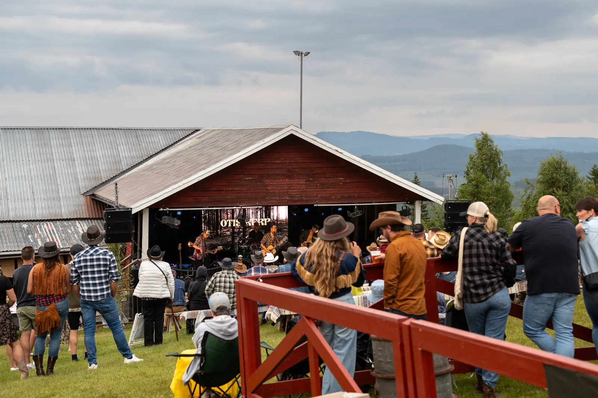
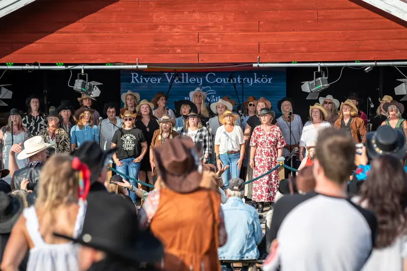

Tattoo & spådom
I tattooladan hittar du tatuerare och en spådam. Missa inte!
Utkast till nya rivervalley.se – inte live än

Take the country road to Boggberget
En helg i hatt, i boots som dansar och med cowboyhjärtan som slår extra hårt.
Sedan 2022
River Valley Countryfestival är tre dagar med countrymusik, linedance och Dalarnas bästa stämning uppe på Boggberget i Evertsberg, Älvdalen.
Idén föddes mitt i pandemin. Sommaren 2022 öppnade Hannah Risander från Älvdalen grindarna för första gången, mitt i den nya countryvågen. Sedan dess har festivalen slagit publikrekord flera gånger och lockar besökare från hela landet. 2026 kom drygt 2 600 besökare.
2027 kör vi för sjätte gången. Numera driver Hannah festivalen tillsammans med Gabriel Soors och Patrik "Putte" Samuelsson i Vildbyn, samma gäng som gör Backwoods Festival på Rotsågen.

Så har vi vuxit
Första River Valley Countryfestival smygstartar på Boggberget i Evertsberg.
Mora TidningFestivalen nomineras till Årets arrangör på Dalecarlia Music Awards. På sommaren kommer omkring 1 400 countryälskare.
Sveriges Radio1 700 betalande besökare, med Maja Francis, Doug Seegers och The Swedish Cowboy på scen.
Siljan NewsMålet nås, och alla husvagnsplatser är fullbokade.
Siljan NewsDrygt 2 600 besökare, River Valley Countrykör debuterar och campingen är full.
Siljan News1–3 juli på Boggberget. Biljetterna släpps 1 december kl. 12.00.
Biljetter & campingFestivalområdet
Inne på området finns tre scener: Utescenen, Rotundan och Publadan. Dessutom en cowboyrestaurang, pop up-butiker, aktiviteter, två barer, matförsäljning och WC.
Aktiviteter
Uppträdanden varje timme, massor av gott käk, roliga pop up-butiker och en skön blandning av människor.
I tattooladan hittar du tatuerare och en spådam. Missa inte!
Vem drömmer inte om ett cowboybröllop? Nu kan det bli verklighet. Ta med hindersprövningen och boka in er på tidernas country wedding!
Boka bröllopRycker det i bootsen? Passa på att lära dig linedance under festivaldagarna. Uppvisning på lördag, för den som är feg och bara tittar.
Självklart ska det quizzas. Både fredag och lördag blir det quiz i Saloonen. Fina priser utlovas …
Utmana kompisarna i vår femkamp. Och ni vet väl att det handlar om att vinna, inte att ha roligt!
Vem är festivalens coolaste cowboy? Kanske en cowgirl. Rodéon väntar på dig hela helgen!
Var med och gör festivalen
Passar dina produkter, din mat eller dina tjänster in på en countryfestival? Kontakta oss gärna om du vill vara med!
Mejla ossVill du hänga med ett härligt gäng, lyssna på country och vara en av nyckelpersonerna i vårt team? Vi söker många medarbetare. Hör av dig!
Mejla ossVill du uppträda på festivalen under vår Open Stage? Hör gärna av dig och berätta om din talang!
Mejla ossPress
Ett urval av vad som skrivits om festivalen genom åren.
Är du journalist? Mejla howdy@rivervalley.se så hjälper vi dig med bilder och intervjuer.